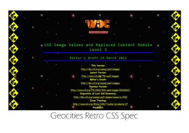
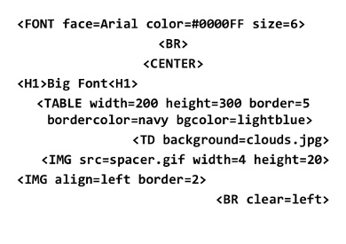
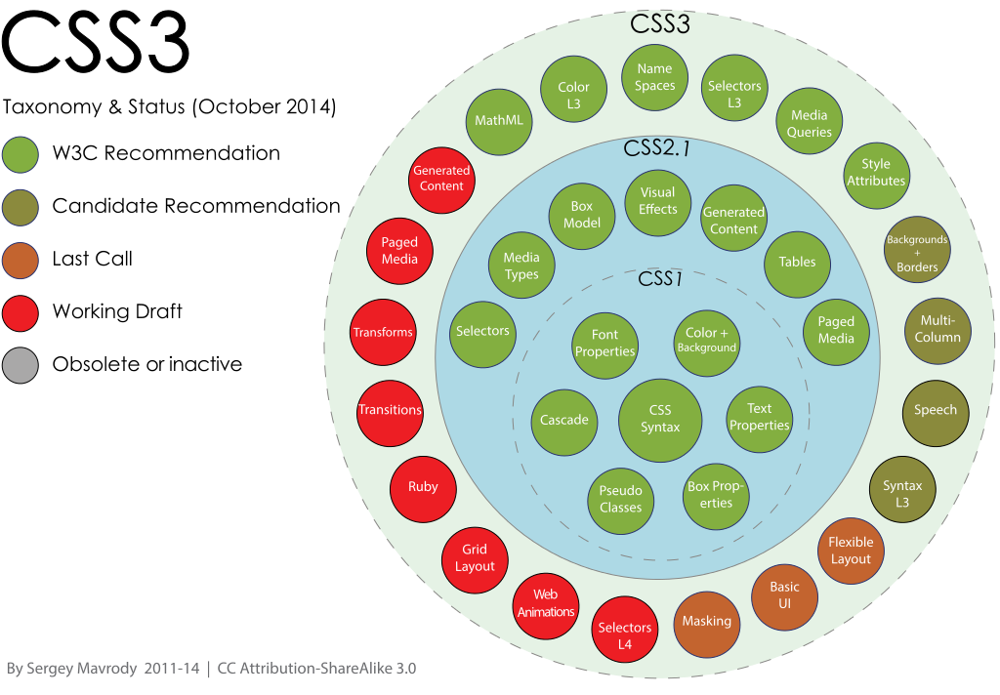
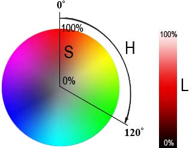

CSS (англ. Cascading Style Sheets — каскадные таблицы стилей) — формальный язык описания внешнего вида документа, написанного с использованием языка разметки

Каша из тегов, «распорки» из прозрачных 1x1.gif

Как задать цвет текста в «чистом» HTML?
<body text="black" link="blue" vlink="..."><font color="red">Как сделать отступ?
<img src="1x1.gif" width="7" height="1">Термин «каскадные таблицы стилей» был предложен Хокон Виум Ли в 1994 году
В середине 1990-х Консорциум Всемирной паутины стал проявлять интерес к CSS

<link rel="stylesheet" href="styles/screen.css" type="text/css"><style> @import url(styles/screen.css) </style> — это вообще не наша таблица<style> ... </style><div style="color: red"> </div>html > head > style
@директивы/* и правила */селектор [, селекторы]{свойство: значение ;свойство: значение ;}
<span>Красный</span>
span { color: blue }span { color: red }
Последнее значение здесь перезаписывает предыдущее
Пример: Красный* все элементы span в документе будут красными!
https://pattle.github.io/simpsons-in-css/
http://daneden.github.io/animate.css/
Для каждого свойства CSS определяет те устройства отображения, к которым это свойство применимо
| aural | звуковое | непрерывное | - |
|---|---|---|---|
| braille | тактильное | непрерывное | символьное |
| emboss | тактильное | страничное | символьное |
| handheld | визуальное | и то, и другое | и то, и другое |
| визуальное | страничное | графическое | |
| projection | визуальное | страничное | графическое |
| screen | визуальное | непрерывное | графическое |
| tty | визуальное | непрерывное | символьное |
| tv | визуальное, звуковое | и то, и другое | графическое |
@media all {BODY { font-size: 10pt }}@media screen {BODY { font-size: 12pt }}@media screen, print {BODY { line-height: 1.2 }}
Целые (100500, -21) и действительные числа (1.25, -.999)
Размеры абсолютные
Размеры относительные
Процентные значения
h1 { font-size: 120% }, в документации всегда указано, что является базовой величиной
Строки
"это 'строка'"'это \'строка\'''это "строка"'"это \"строка\"""это строка,\A состоящая из двух строк"
Ссылки (URI)
body { background: url(bg.gif) }
или background: url("data:image/gif;base64,КОД"); }
Цвета
hsla (Hue, Saturation, Lightness, Alpha)

* — универсальный селектор, все элементы документаh1) — все элементы с данным именемH1 { font-family: sans-serif }H2 { font-family: sans-serif }H3 { font-family: sans-serif }
эквиваленты одному правилу
H1, H2, H3 { font-family: sans-serif }
<p class="warning"> один </p>
<p class="warning red"> два </p>
<p class="warning blue"> три </p>
В таблице стилей:
p.warning { font-style: italic }*.red { color: red }.warning.red { font-weight: bold }
<div id="navigation"> ... </div>
В таблице стилей:
@media print { #navigation { display: none } }
Обычно идентификатор уникален :)
<a href="logo.png" target="_blank"> ... </a>
В таблице стилей:
[href] — есть атрибут? хорошо, значение не важно[target="_blank"] — атрибут с конкретным значением[href^="http://"] — начинается с ...[href$=".png"] — или заканчивается ...[href*="github"] — или где-то внутри<p class="block-menu-therm red" lang="en-us"> ...
В таблице стилей:
[class~="red"] — одно значение из списка с пробелами[target|="en"] — с начала и до дефиса (напр., для групп языков)div { color: black }a { color: navy }.menu * a { color: blue }
<div class="menu"><a href="1.html">Русская кухня</a><ol><li><a href="2.html">Японская кухня</a></li></ol>
div { color: black }a { color: navy }.menu > a { color: blue }
<div class="menu"><a href="1.html">Русская кухня</a><ol><li><a href="2.html">Японская кухня</a></li></ol>
h2 + p { font-style: italic }
<h1>Методы ловли льва в пустыне</h1><h2>Метод последовательного перебора</h2><p>Для упрощения расчетов хвост можно отбросить и не принимать во внимание</p><p>Пусть лев имеет габаритные размеры L x W x H ...</p><p>Пустыню разбиваем на ряд элементарных прямоугольников ...</p>
:active:link:focus:hover:visited:first-child:lang(ru):after:before:first-letter:first-lineДочерние элементы наследуют некоторые стилевые свойства своих родителей
Смотрите в спецификацию, интуиция может подвести!
body { font-family: Arial; color: navy }
<body><p>Цвет текста этого абзаца синий.</p></body>
Изменение наследуемых свойств
body { font-family: Arial; color: navy }
.red { color: red }
<body><p>Цвет текста этого абзаца синий</p><p class="red">цвет этого — красный, шрифт Arial</p></body>
У стилей есть приоритеты в зависимости от источника
сортировка по возрастанию приоритета
<div id="menu"><ul><li id="red">Первый</li><li class="green">Второй</li><li>Третий</li></ul></div>
<div id="menu"><ul><li id="red">Первый</li><li class="green">Второй</li><li>Третий</li></ul></div>
#red { color: red } посмотреть ответdiv > ul > li { color: blue }.green { color: green }li { color: yellow }
Записать 3 числа подряд, приведя к максимальному основанию
* {} /* a=0 b=0 c=0 -> специфичность = 0 */li {} /* a=0 b=0 c=1 -> специфичность = 1 */li:first-line {} /* a=0 b=0 c=2 -> специфичность = 2 */ul li {} /* a=0 b=0 c=2 -> специфичность = 2 */ul ol+li {} /* a=0 b=0 c=3 -> специфичность = 3 */ul li.red {} /* a=0 b=1 c=2 -> специфичность = 12 */li.red.level {} /* a=0 b=2 c=1 -> специфичность = 21 */#t34 {} /* a=1 b=0 c=0 -> специфичность = 100 */#content #wrap {} /* a=2 b=0 c=0 -> специфичность = 200 */
Свойство: значение !important
позволяет повысить приоритет стиля